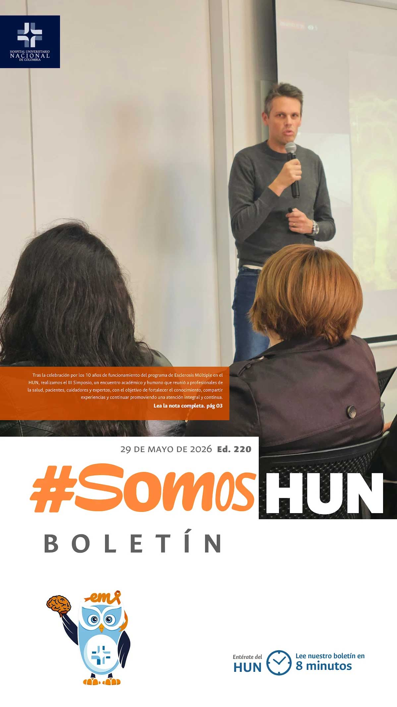
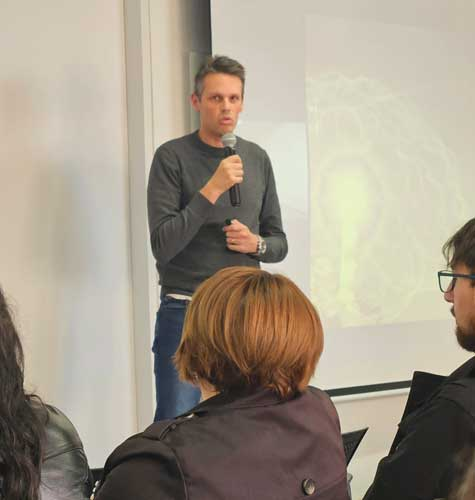
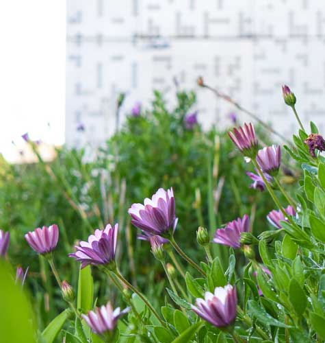
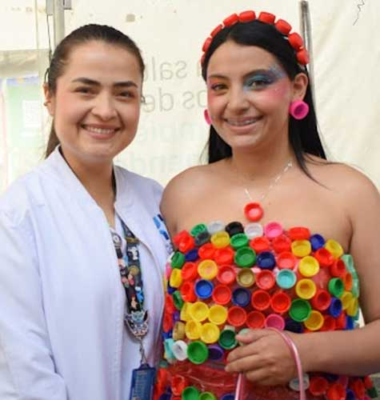

Ver todos los boletines
10 años de apertura del Programa de Esclerosis Múltiple en el HUN
Diez años pueden parecer sólo una cifra, pero detrás de este aniversario existen historias de vida, aprendizajes, acompañamiento y esperanza. Durante una década, nuestro programa ha caminado junto a pacientes y familias, convirtiéndose en un espacio de apoyo integral, escucha y atención humanizada.Leer más

Más vida, menos humo En el HUN elegimos los espacios saludables.
El HUN se une para conmemorar el día mundial sin tabaco, una fecha promovida por la organización mundial de la salud para visibilizar los efectos del consumo de tabaco en la salud y fomentar políticas que protejan a las personas.Leer más

Así se vivió el cierre de la Semana de la Responsabilidad Social
Barreras cutáneas, bolsas de suero y tapas plásticas desfilaron en la carpa del HUN, cambiando el ambiente hospitalario por una fiesta dedicada a la conciencia medioambiental.Leer más